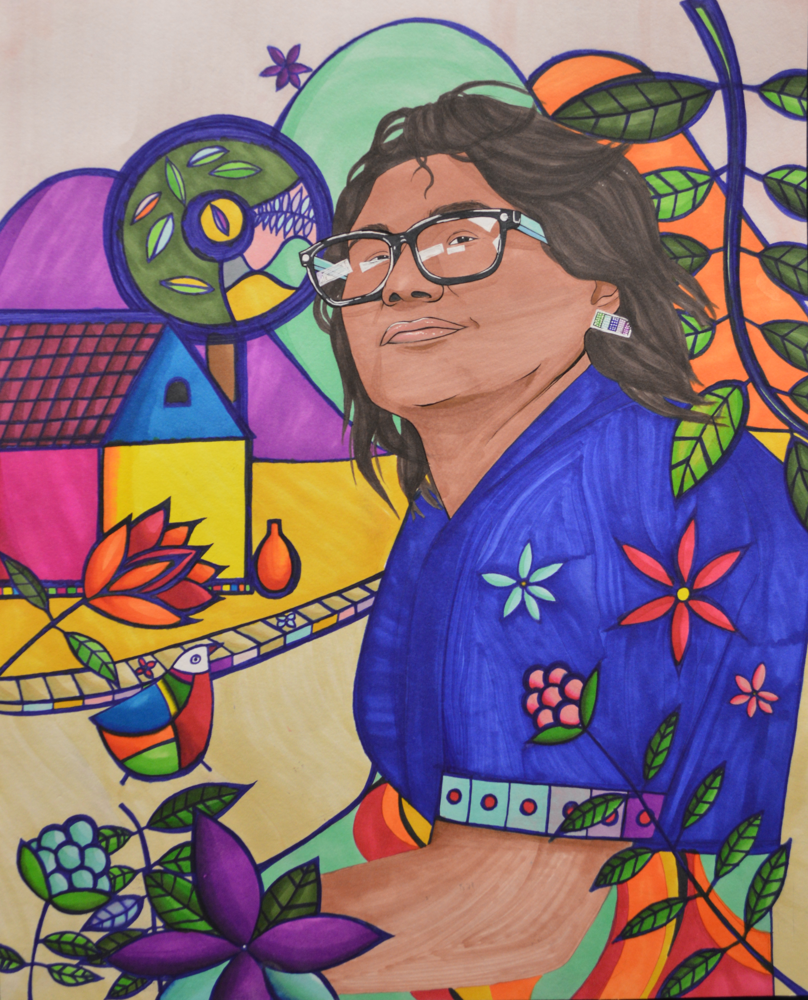
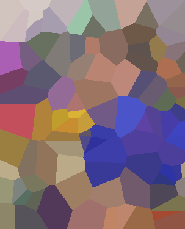
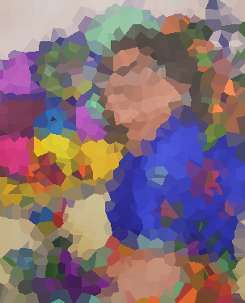
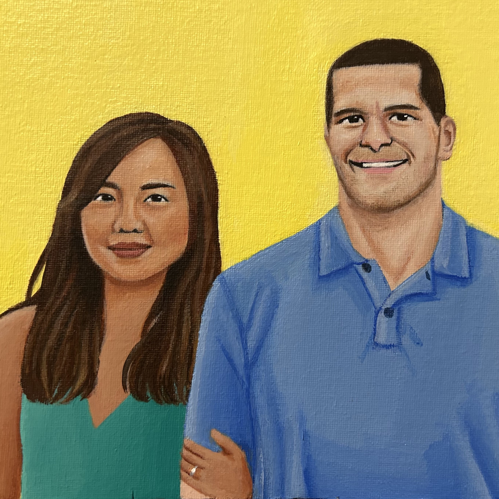
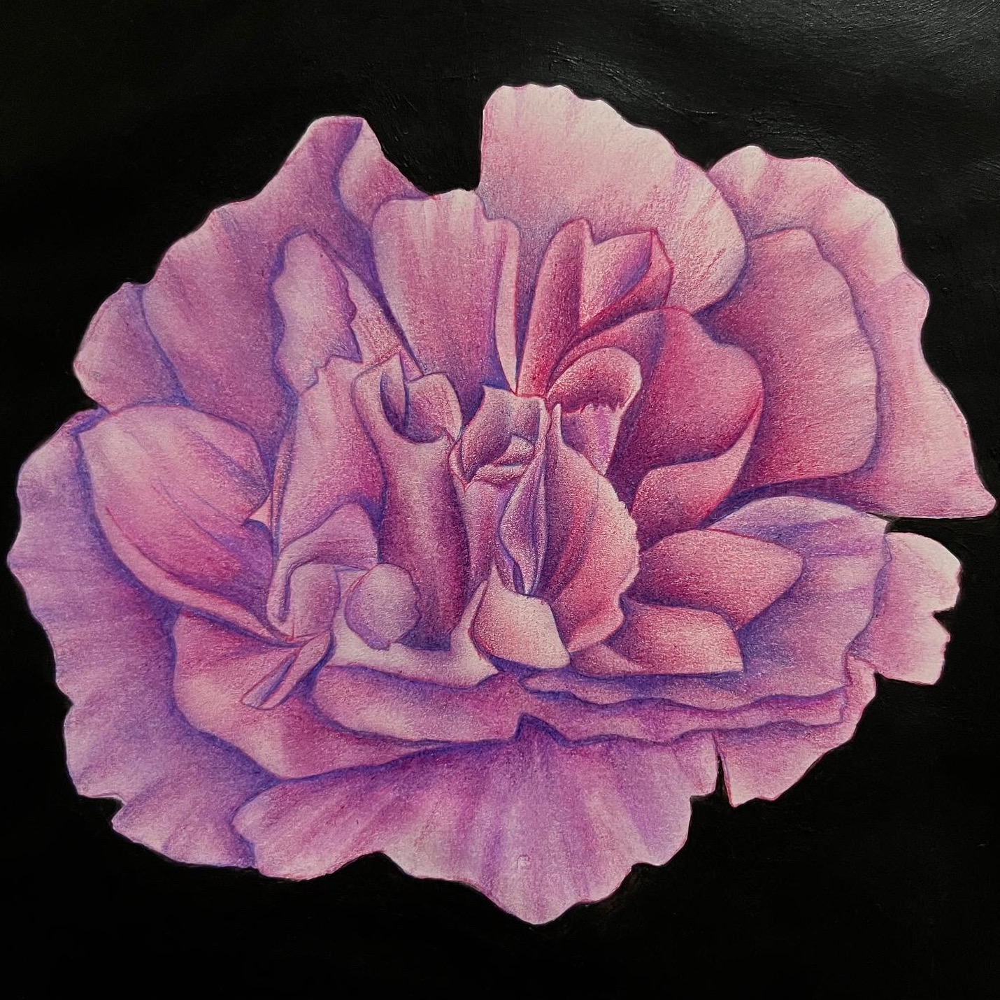
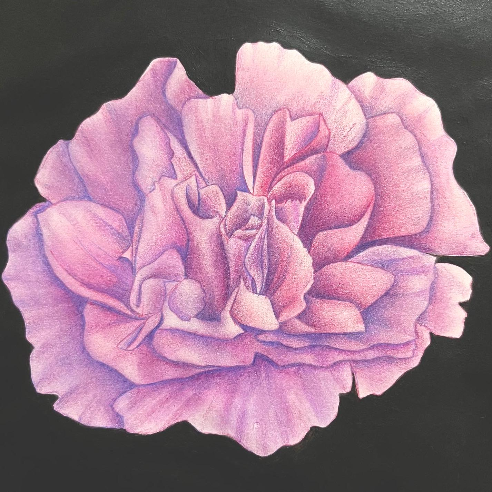
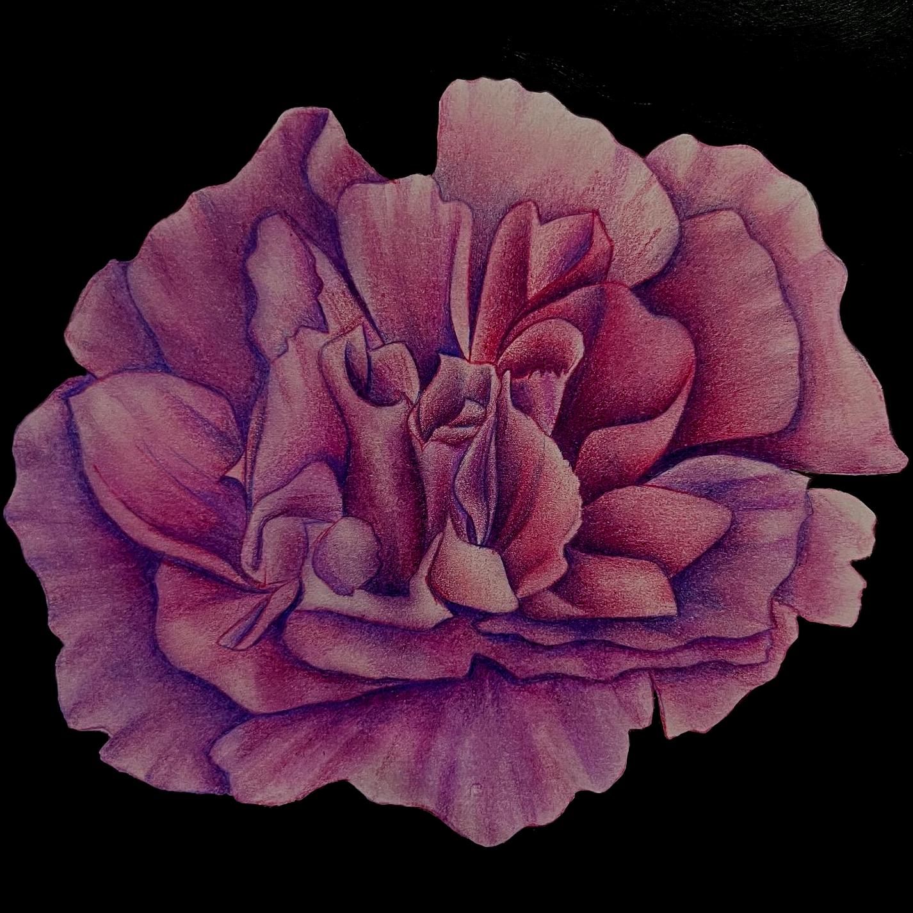
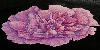

Projects
Select any project to view right below. Their repositories can be accessed near project names. My is smartinez-delicia.
Log In/Register 
Profile 
Bab 
Feed 
One of the transformations includes mosaicing an image, given the number of seeds that the user inputs.
Original Image
10 Seeds 
100 Seeds 
1000 Seeds 
View other transformations
Original 
Red Component
Blue Component
Green Component
Intensity Component
Sepia
Original
Blurred 
Sharpened
Original 
Brighten by 50% 
Darken by 50% 
Downscale to 50px by 50px
Downscale to 50px by 100px 